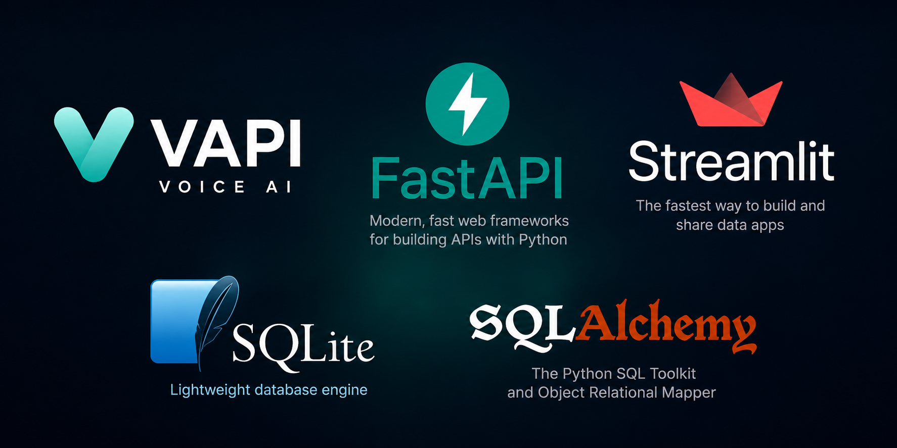

AI-Powered Hospital Appointment Management System using Vapi AI, FastAPI, Streamlit, SQLite & SQLAlchemy

Healthcare systems often require patients to navigate multiple forms and screens to book appointments. I wanted to simplify this process by creating an intelligent voice assistant capable of handling appointments through natural conversations.
To achieve this, I built Shifa AI, an AI-powered Hospital Appointment Management System that combines voice technology, backend APIs, and an interactive web interface. The system enables users to book appointments, check availability, reschedule appointments, cancel appointments, and view appointment history using voice and text interactions.
Shifa AI is a full-stack AI application designed to automate appointment management within healthcare environments.
Enables natural voice conversations and AI-powered appointment handling.
Powers backend APIs for appointment management.
Provides a clean and interactive user interface.
User
│
▼
Vapi AI Voice Assistant
│
▼
FastAPI Backend
│
▼
SQLAlchemy ORM
│
▼
SQLite Database
Patients can book appointments quickly through voice commands or the web interface.
Verify appointment slots before booking.
Modify existing appointments seamlessly.
Instantly cancel appointments when required.
Access and review all previously booked appointments.
The most exciting part of the project is the AI Voice Assistant powered by Vapi AI.
"Book an appointment for tomorrow."
"Show my appointment history."
The assistant understands user requests and performs appointment-related operations automatically.